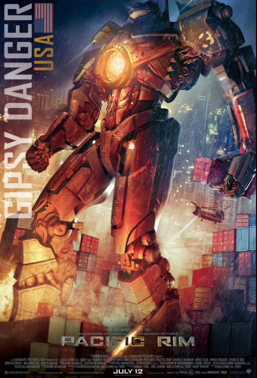

The Jaegers

Jaegers (German for "Hunter") are massive, humanoid mechs developed by the Pan Pacific Defense Corps. Here are a few of the most famous models.
- Gipsy Danger
- A Mark-3 American Jaeger. Famous for its I-19 Plasmacaster and Chain Sword weapons.
- Striker Eureka
- A Mark-5 Australian Jaeger. The fastest and strongest Jaeger, equipped with Anti-Kaiju "Brass Knuckle" missile launchers.
- Cherno Alpha
- A Mark-1 Russian Jaeger. One of the oldest but most heavily armored, "tank" Jaegers.
- Crimson Typhoon
- A Mark-4 Chinese Jaeger. Famous for its three-pilot system and "Thundercloud Formation" triple-blade attacks.